Du möchtest dir einen Router anschaffen und ihn für Freifunk vorbereiten? Hier folgen ein paar Tipps, wie du vorgehen kannst!
Schritt für Schritt:
Auch wenn du schon einen Router für deinen eigenen DSL-Anschluß hast, wirst du dir für das Freifunk-Netz einen weiteren Router zulegen müssen. Das liegt daran, dass er eine neue Betriebssoftware benötigt. Er wird per Kabel dann später mit deinem eigenen Router verbunden, wenn du einen hast.
Am Freifunk-Netz kannst du aber auch ohne eigenen DSL-Anschluß teilnehmen. Dann brauchst du aber bereits Freifunk-Router in deiner Reichweite, mit denen er sich dann verbinden kann.
Du brauchst eine Entscheidungshilfe?
Wir empfehlen aktuell den TP-LINK TL-WR841N und den TP-LINK TL-WR841ND (der gleiche nur mit abnehmbaren Antennen) als Einstiegsgeräte. Für größere Installationen bieten sich ein TP-LINK TL-WDR3600 oder TL-WDR4300 an.
Eine umfassende Liste, welche Geräte unterstützt werden, findest du hier:
Freifunk-Gluon-Hardware-Verzeichnis
Du hast deinen Router vor dir auf dem Tisch?! Dazu solltest du ein Netzteil haben, die evtl. abschraubbaren Antennen und ein kurzes Stück LAN-Kabel, das wir für die Verbindung zwischen deinem Computer und dem Router benötigen. Den Rest: Papier und CDs benötigen wir nicht.
Bevor du loslegen kannst, solltest du ein paar Dinge vorbereiten. Du hast nämlich gleich keine Interverbindung mehr, wenn du dich mit deinem Router verbindest. Daher empfiehlt es sich am Computer die nachfolgenden Punkte erst zu erledigen, bevor du deinen neuen Router mit dem Rechner verbindest.
Lasse diese Internet-Seite im Browser bis zum Ende geöffnet!
Herauszufinden welche Gluon-Firmware du brauchst, ist ganz einfach. Der Router-Typ (1) und die Hardware-Version (2) stehen auf der Rückseite des Routers.
Öffne das Verzeichnis mit unserer Freifunk-Software und suche anhand des unten aufgeführten Beispiels deine passende Datei. Beachte, dass wir die Software getrennt für Freifunk-Mainz und Freifunk-Wiesbaden anbieten. Je nachdem wo du den Router aufstellen willst, solltest du hier die richtige Entscheidung treffen:
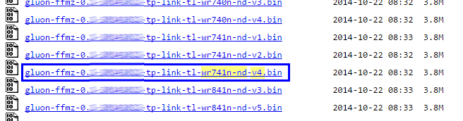
Klicke auf den gewünschten Eintrag und speichere dir diese Datei auf deinem Rechner für später.
Wir haben eine Live-Karte, wo jeder die gerade aktiven Freifunk-Knoten sehen kann. Wenn du willst, das auch dein Knoten später darauf erscheint, benötigst du die Koordinaten. Auch das ist recht einfach.
Rufe die Karte auf und zoome ganz dicht auf deinen gewünschten Standort heran. Dann klickst du oben auf den Button "Koordinaten beim nächsten Klick anzeigen". Als nächstes klickst du auf die Stelle in der Karte, wo er erscheinen soll. Nun werden die Koordinaten in einer Box angezeigt. Kopiere sie dir über die Zwischenablage an einen sicheren Platz auf deinem Computer. Wir brauchen sie erst am Schluß wieder.
Nun ist der Zeitpunkt gekommen, wo du den neuen Router mit deinem PC verbinden solltest, damit wir die neue Software - man nennt es auch "Image" oder die "Firmware" - aufspielen können.
Siehe Fig.3: Bitte schließe deinen Router (1) an eine Steckdose an – Das Kabel dazu ist dabei (3). Die Antenne (2) kannst du jetzt oder auch später aufschrauben. Verbinde dann den Router mit dem beiliegenden LAN-Kabel (4) mit Deinem Computer.
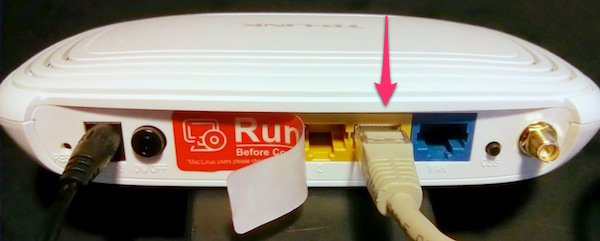
Stecke dafür das Kabel in eine der gelben Buchsen.
Jetzt kannst du den Router einfach über den Browser konfigurieren. Dazu rufst du in deinen Browser folgende Adresse auf: http://192.168.0.1. Bevor du weitermachst, musst du dich erst anmelden. Der Benutzername ist bei TP-Link Routern "admin" und das Passwort "admin". Wie man bei anderen Geräten in die Einstellungen kommt ist unterschiedlich und steht im Handbuch des jeweiligen Gerätes.
Dein Browserfenster müsste nun so aussehen – Folge hier der Verknüpfung “System Tools” im Menü links unten.
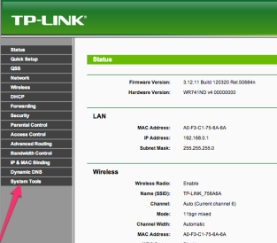
Als nächste wählst du aus dem Menü “Firmware Upgrade” (1). Danach die gespeicherte Freifunk-Software auswählen (2). Nach einem Klick auf “Upgrade” (3) beginnt der Prozess.
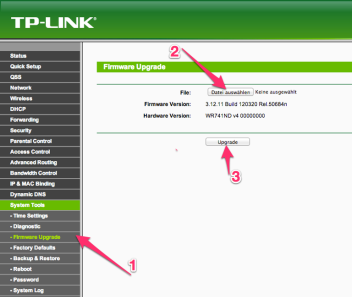
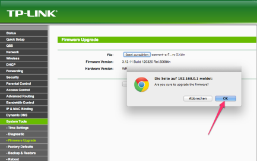
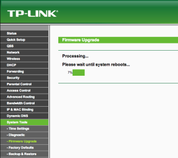
Nachdem die Firmware fertig eingespielt ist, startet der Router neu. Das dauert so zwischen 1-2 Minuten. Dass der Router neu startet merkst du auch beim Betrachten der Lampen. Es gibt einen Moment da gehen alle Lampen gleichzeit kurz an, dann wieder aus. Jetzt beginnt die Startprozedur. Wenn danach das Lämpchen mit dem Zahnrad gemütlich vor sich hin blinkt, ist der Router im Config-Mode angekommen.
Jetzt ist der Router nicht mehr unter der angegeben Adresse sichtbar und eine Fehlermeldung erscheint (siehe Fig.9). Das ist gut so. Denn nun läuft die neue, tolle Freifunk Firmware auf deinem Router.
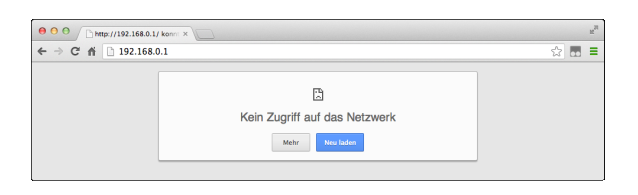
Fig.9 — Die Adresse hat sich geändert, daher gibt es hier keinen Anschluss mehr.
Du erreichst deinen Router jetzt unter der geänderten Adresse http://192.168.1.1
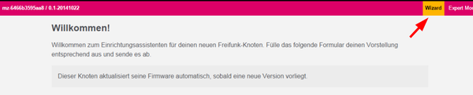
Wie du rechts oben erkennen kannst, befindest du dich im "Wizard"-Modus. Alle notwendigen Daten zur Inbetriebnahme sind auf dieser einen Seite zusammengefaßt. Sie auzufüllen reicht normalerweise aus! Vorab einen Blick in den Experten-Modus zu werfen ist trotzdem lohnenswert.
Bevor du anfängst hier die ersten Zeilen auszufüllen, solltest du dem Router ein Passwort verpassen, mit dem man später im laufenden Betrieb Wartungsarbeiten durchführen kann. Fehlt das, dann muss man immer vor Ort mit Kabel direkt an den Router gehen. Gehe rechts oben in den Experten-Modus und dann auf "Remotezugriff". Mehr Details zu diesem Abschnitt findest du im Wiki. Nach dem Speichern gehe zurück in den "Wizard-Modus" und lege los mit den folgenden Angaben:
Als erstes solltest du deinem Router einen Namen geben. Nimm einfach einen, der dir gefällt und vielleicht etwas über den Standort des Routers aussagt. Im Beispiel verwenden wir “Lisas-Freifunk”. Bitte achte darauf, dass keine Leerzeichen im Namen enthalten sind. Verwende stattdessen einfach einen Bindestrich (“-“) oder Unterstrich (“_”).
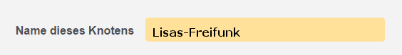
Wenn du bei "Mesh-VPN aktivieren" ein Häkchen setzt, wird über deinen Internet-Anschluss eine verschlüsselte Verbindung zu den Freifunk-Servern hergestellt. Diese verbinden deinen Router dann mit weit entfernten Freifunk-Routern und dem Internet, ohne Störerhaftung.
Wenn die Option deaktiviert bleibt, kann sich dein Router nur per Funk mit anderen Freifunk-Routern in der Nachbarschaft verbinden. Internet-Zugang ist dann nur möglich, wenn einer der anderen Router ihn anbietet.
Wir empfehlen dieses Häkchen zu setzen.
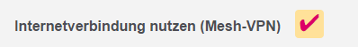
Wenn du einen normalen Internet-Anschluss hast (16 Mbit und mehr), wird dein Freifunk-Router im alltäglichen Betrieb nicht allzuviel von deiner Bandbreite in Anspruch nehmen.
Solltest du aber trotzdem eine Begrenzung eintragen wollen, setze den Haken "Mesh-VPN Bandbreite begrenzen". Daraufhin erscheinen zwei neue Felder. Trage in die beiden Felder die gewünschten Grenzen in Kbit/s ein. Wir empfehlen mindestens "8000" für Downstream und "500" für Upstream.
Unsere Empfehlung: die Begrenzung nicht zu aktivieren.
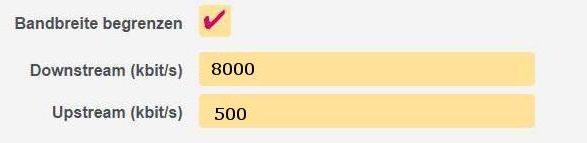
Wenn du möchtest, dass dein neuer Knoten auf unserer Live-Karte auftauchen soll, sind hier deine am Anfang notierten Koordinaten einzutragen.
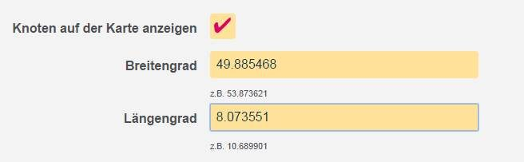
Es kann immer mal Änderungen am Freifunk Netz geben, die so gravierend sind, dass du an deinen Router nochmal Hand anlegen musst. Dazu ist es empfehlenswert, wenn du an dieser Stelle etwas hinterlässt wie Telefonnummer oder E-Mail Adresse. Diese Information ist im gesamten Freifunk Netzwerk öffentlich zugänglich, wird aber an keiner Stelle im Internet veröffentlicht.
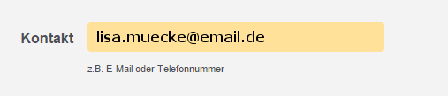
Es fehlt jetzt nur noch den Knopf rechts unten "Speichern & Neustart" zu klicken. Sobald du das machst, wird dein Router fertig eingerichtet.
Auf der dann erscheinenden Abschluss-Seite bekommst du die letzten Hinweise. Zum Beispiel wird dort der VPN-Schlüssel ausgegeben, den du uns per E-Mail schicken solltest. Den müssen unsere Server kennen, wenn du den Router an deinen DSL-Anschluss anklemmen willst. Solange der uns nicht bekannt ist, wird er keine Verbindung bekommen.
Der Schlüssel erscheint innerhalb des gestrichelten Feldes. Ist er nicht vorhanden, dann hast du vergessen "VPN-Mesh" in der Konfigurations-Seite anzuschalten.
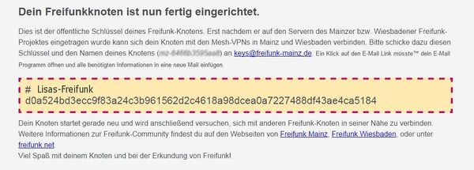
Du hast angeklickt, dass du deinen DSL-Anschluss benutzen willst (VPN-Mesh)? Dann kommt auf der Rückseite des Routers jetzt die "blaue" Buchse (WAN) zum Einsatz.
Verbinde mit einem LAN-Kabel diese blaue Buchse mit deinem eigenen Router am DSL-Anschluss.
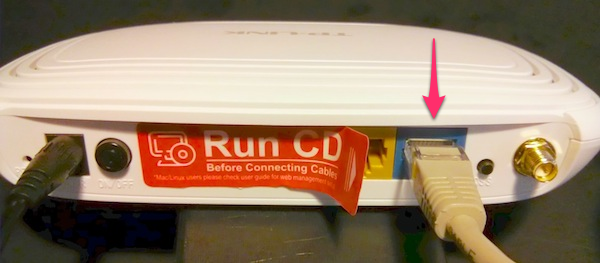
Fig.14 — Diese Buchse verwenden und mit DSL-Anschluss verbinden.
Wann dein Router auf der Live-Karte sichtbar wird, unterliegt folgenden Bedingungen:
Wenn die Konfiguration einmal abgeschlossen ist, meldet sich der Router nicht mehr in diesem Wizard-Modus. Es gibt aber einen Weg, nachträglich in diesen Modus zurück zu kommen und alle Daten zu ändern. Die gesetzten Werte findest du gefüllt in den Feldern vor.
Verbinde dazu deinen Computer wieder per LAN-Kabel mit einer gelben Buchse deines Routers.
Halte im aktiven Betrieb für 10 Sekunden den Reset-Knopf auf der Geräte-Rückseite gedrückt, bis der Router neu startet
Nach einer gewissen Wartezeit, erhält dein Rechner wieder eine Adresse vom Router zugewiesen und dann ist er per Browser wieder über http://192.168.1.1 erreichbar. Die "Sternchen"-Lampe blinkt wieder langsam vor sich hin, wenn es soweit ist.
Wenn du fertig bist, klicke wieder auf "Speichern & Neustart" um den Vorgang abzuschließen. Jetzt wichtig: wenn sich der Schlüssel geändert hat, was in seltenen Fällen passieren kann, dann melde ihn wieder per E-Mail zum Eintragen.